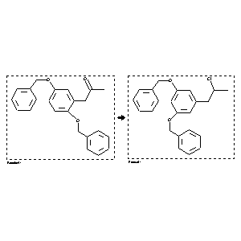

|  |
| FA | RX(1); FLST(1); RX(1) |
Reaction (1 of 1)
| Reaction ID | 2977570 |
| Reactant BRN | 5111324 |
| Reactant | 1-(2,5-bis-benzyloxy-phenyl)-propan-2-one |
| Product BRN | 5094217 |
| Product | 1-(3,5-bisbenzyloxyphenyl)-2-chloropropane |
| No. of Reaction Details | 1 |
Reaction Details (1 of 1)
| Reaction Classification | Preparation |
| Yield | 83 percent (BRN=5094217) |
| Reagent | phosphorus pentachloride |
| Solvent | diethyl ether |
| Time | 30 min |
| Citation Pointer | 5628168; Journal; Hill, Robert A.; Carter, Rachel H.; Staunton, James; JCPRB4; J.Chem.Soc.Perkin Trans.1; EN; 1981; 2570-2576; |
Reference (1 of 1)
| Citation Number | 5628168 |
| Document Type | Journal |
| Authors | Hill, Robert A.; Carter, Rachel H.; Staunton, James |
| CODEN | JCPRB4 |
| Journal Title | J.Chem.Soc.Perkin Trans.1 |
| Language Code | EN |
| Publication Year | 1981 |
| Page | 2570-2576 |